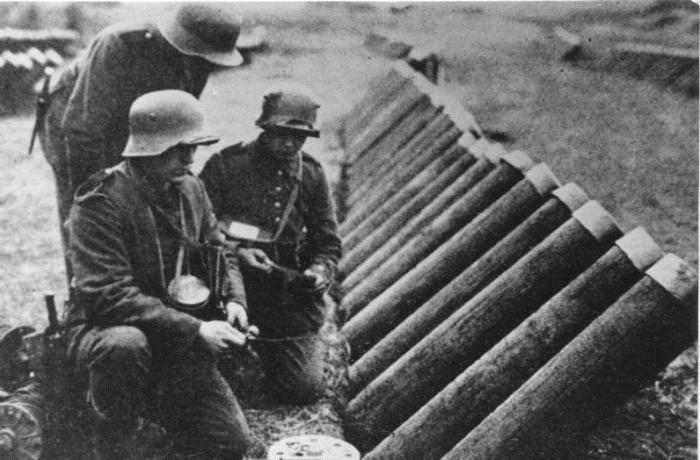

Kézi fegyverek
A géppuska
Önmûködõ, sorozatlövés leadására alkalmas lõfegyverek léteztek már az elsõ világháború kitörése elõtt is, igazán félelmetes hírnévre azonban 1914 után tettek szert.
A golyószórókat először a franciák alkalmazták, akik már 1915-ben bevezették. A géppuskát a háború elején leginkább védekezésre használták. Az egymást fedezõ géppuskafészkek gyakorlatilag leküzdhetetlen akadályt állítottak a rohamozó gyalogság elé.
A fegyverek 1915-re már a frontvonalak talán legfontosabb tényezõivé váltak. Betonfedezékeket kaptak, de kifejezetten offenzív célokra is kiválóan alkalmasnak bizonyultak. A géppuska kiváló hadrafoghatóságát a Franciák után a németek ismerték fel, és nagy számban kezdtek el automata fegyvereket bevetni, kezdeti sikereik is részben ennek köszönhetõk.
A gyorstüzelõ ágyú
A gyorstüzelõ ágyú képzett tüzérek kezében igencsak hatékony fegyvernek bizonyult, mivel percenként akár hússzor is tüzelhettek vele.
Gyorsaságának és pontosságának köszönhetõen korszakának legjobb gyorstüzelõ ágyújának tartották, mire befejezõdött a háború, addigra már több mint tizenkétezer darab hagyta el belõle a gyárat.
Az akna
A lövészárok-háborúk egyik fontos eleme lett az ellenség mozgásának akadályozása. Ennek az egyik leghatékonyabb eszközévé vált az akna, amit álcázva helyeztek el a lehetõ legnagyobb pusztítás érdekében.
Az aknák önmûködõen vagy irányítással robbantak. Az önmûködõ akna mûködésbe lépésekor bekövetkezõ robbanást maga a céltárgy idézte elõ, amely lehetett személy vagy technikai eszköz – a harckocsi megjelenése ezek jelentõségét is megnövelte. Az irányított akna robbanását idõzített (késleltetõ) szerkezet vagy az aknát megfigyelõ katona végezte.
Az aknát a tengeren is alkalmazták, ahol akár kilométeres aknazárakat is telepítettek, ami a hajók egyik legfõbb ellensége lett.

A kézigránát
A kézigránát szintén létezett már az elsõ világháború elõtt is, de igazán nagy pusztítást a lövészárok- hadviselés során tudott kifejteni, ekkor ugyanis egészen közel kerültek egymáshoz a harcoló felek.
A frontokon a gyalogos katonák állandó fegyverévé vált ez a mûködési elv szempontjából igencsak egyszerû szerkezet.
A legnagyobb hasznát akkor vették, amikor a katonák jól beásott ellenséget támadtak.

A lángszóró
Ez a fegyver már csak azért is érdekes, mert annak ellenére, hogy a német hadsereg vetette be elõször a fronton, feltalálója egy magyar ember, Szakáts Gábor volt.
Amikor a német csapatok elõször hajtottak végre támadást a szerkezettel, a francia katonák hanyatt-homlok menekültek a német lángszórós osztagok elõl. Pszichológiai hatása sok gyõztes csata megvívásához segítette hozzá a német hadsereget.
Nagy Háború betonbunkerekkel megerõsített lövészárkaiban derült ki, hogy ez a félelmetes fegyver a három méter vastag betonfalat is képes száznegyven fokra hevíteni, s ezzel kiûzni a védõket biztosnak hitt állásaikból.
Harci gázok
Az elsõ világháborúban bevetett harci gázok voltak az elsõ, mai értelemben vett tömegpusztító fegyverek. A mustárgázt elõször 1917-ben vetették be a németek a belgiumi Ypres mellett; a britek és a franciák ellen.
mustárgáz hatásai: Szemek: irritáció, vörösség, égés, gyulladás, sőt vakság Bőr: viszkető vörösség, amelyet sárga hólyagcserével váltanak fel Légzőrendszer: orrfolyás vagy véres orr, tüsszögés, rekedt torok, légszomj, köhögés, szinuszos fájdalom Emésztőrendszer: hasi fájdalom, hasmenés, láz, hányinger és hányás
A háború végére a szövetségesek is elõ tudták állítani a szert, amelyet 1925-tõl a genfi egyezmény, illetve 1993-tól a Vegyifegyver-tilalmi Egyezmény is tiltólistára helyezett.
gáz fajták: Halálos gázok fogyatékossághoz vagy halálhoz vezethet. Zaklató ügynökök ne okozzon baleseteket, hanem zavarja az ellenséges katonákat.